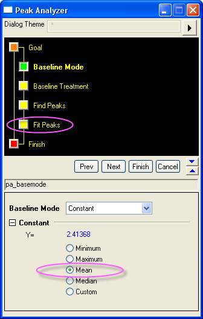
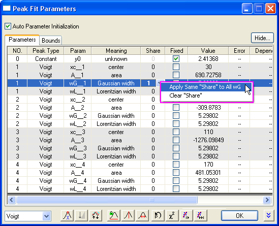
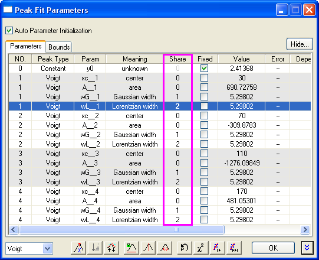
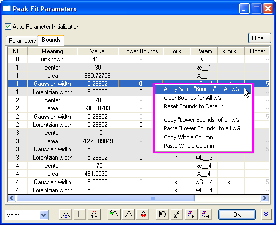
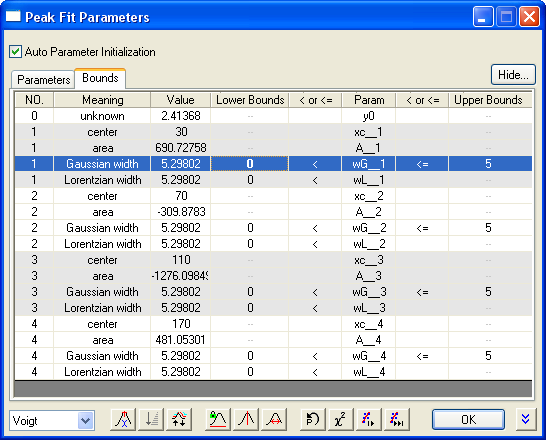

Gleichzeitiges Einstellen des Status' Fest, Teilen oder Schranken für Parameter mehrerer Impulse
Quick-Set-MultiPeakParameter
Zusammenfassung
Beim Durchführen einer Peakanalyse möchte man oft Parameterwerte festlegen oder Parameter für mehrere Peaks gleichzeitig nutzen oder Schranken festlegen. Sollten Ihre Daten nur ein paar Peaks haben, können Sie diese Einstellungen einfach für jeden Peak durchführen. Wenn Ihre Daten jedoch über viele Peaks verfügen, kann es sehr zeitaufwändig sein, sie einzeln festzulegen. Eine effizientere Methode bietet Peaks analysieren durch einige Kontextmenüs, mit denen Sie den Status Fest oder Teilen und die Schranken für mehrere Peakparameter gleichzeitig festlegen können. Weitere Einzelheiten zu diesen Einstellungen finden Sie in der Origin-Hilfe.
Origin-Version mind. erforderlich: OriginPro 8.0 SR6
Was Sie lernen werden
- Wie wird der Status Teilen für mehrere Peakparameter gleichzeitig festgelegt?
- Wie werden die Werte für die oberen Schranken und unteren Schranken für mehrere Peakparameter gleichzeitig festgelegt?
Schritte
- Öffnen Sie eine neue Arbeitsmappe und importieren Sie die Datei <Origin-Programmordner> \Samples\Spectroscopy\Positive & Negative Peaks.dat.
- Markieren Sie die zweite Spalte und wählen Sie Analyse: Peaks und Basislinie: Peaks analysieren, um den Dialog Peaks analysieren zu öffnen. Wählen Sie auf der ersten Seite (der Startseite) das Optionsfeld Impulse anpassen in der Gruppe Ziel. Klicken Sie auf die Schaltfläche Weiter, um zur nächsten Seite zu gelangen.
- Wählen Sie auf der Seite Modus Basislinie die Option Konstant aus der Auswahlliste Modus Basislinie und wählen Sie Mittelwert in der Gruppe Konstant. Klicken Sie auf das Seitensymbol für Impulse fitten in der Assistentenstruktur oben, um zur Seite Impulse fitten zu gelangen.
- 
- Auf der Seite Peaks anpassen (Pro):
- Klicken Sie auf die Schaltfläche Fit-Steuerung, um das Dialogfeld Impuls-Fit Parameter zu öffnen. Wählen Sie in der unteren linken Ecke des Dialogfelds die Anpassungsfunktion Voigt.
- Stellen Sie sicher, dasss die Registerkarte Parameter aktiviert ist und wählen Sie dann 1 in der Spalte Teilen der Zeile wG_1. Klicken Sie dann mit der rechten Maustaste darauf und wählen Sie Apply Same "Teilen" to All wG (Gleiches "Teilen" auf alle wG anwenden). Sie können danach feststellen, dass alle Parameter mit dem Präfix wG in der gleichen Gruppe geteilt werden.
- 
- Wählen Sie dann 2 in der Spalte Teilen der Zeile wL_1. Klicken Sie dann mit der rechten Maustaste darauf und wählen Sie Apply Same "Teilen" to All wL (Gleiches "Teilen" auf alle wL anwenden). Sie können danach feststellen, dass alle Parameter mit dem Präfix wL in der gleichen Gruppe geteilt werden. Danach sollte die Registerkarte Parameter folgendermaßen aussehen:
- 
- Die Registerkarte Schranken Klicken Sie doppelt in die Zelle der ersten Zeile Gaussian width und auf die zweite Spalte < oder <=. Dadurch wird das Symbol <= in dieser Zelle angezeigt (< wird angezeigt, wenn Sie ein weiteres Mal doppelt in die Zelle klicken). Geben Sie dann 5 in die Spalte Obere Grenzen in der gleichen Zeile ein.
- Klicken Sie dann mit der rechten Maustaste darauf und wählen Sie Apply Same "Bounds" to All wG (Gleiche "Schranken" auf alle wG anwenden).
- 
- Danach sollte die Registerkarte Schranken folgendermaßen aussehen:
- 
- Klicken Sie auf die Schaltfläche Fit bis konvergiert. Wenn die Anpassung durchgeführt ist, klicken Sie auf OK, um den Dialog zu schließen.
- Klicken Sie auf der Seite Peaks anpassen (Pro) auf die Schaltfläche Fertig, um die Analyse abzuschließen. Die Ergebnisse finden Sie in der Quellarbeitsmappe und dem Diagrammbericht.